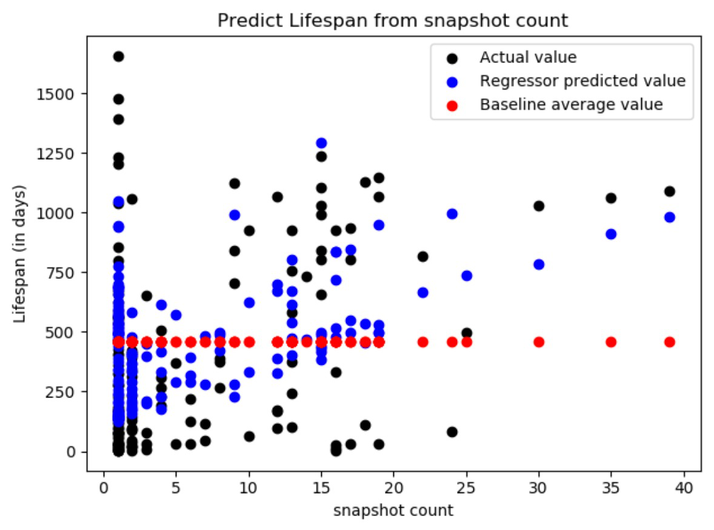
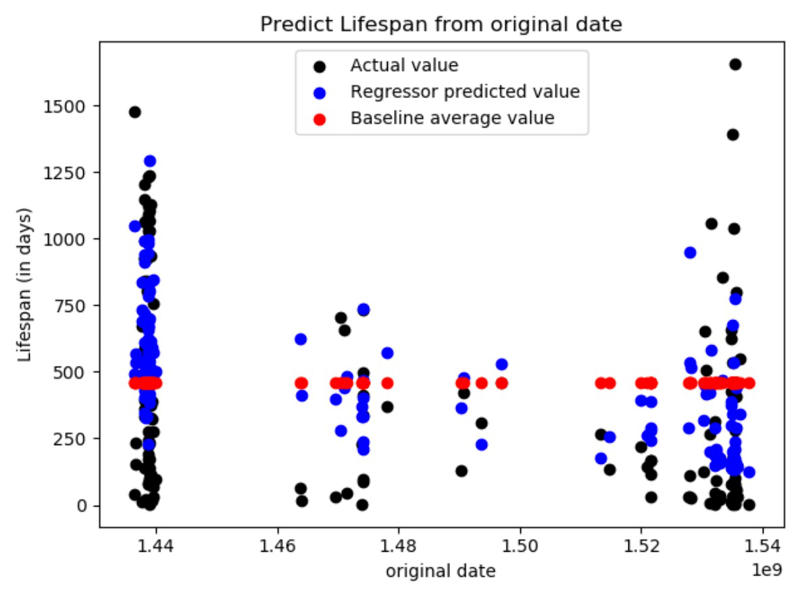
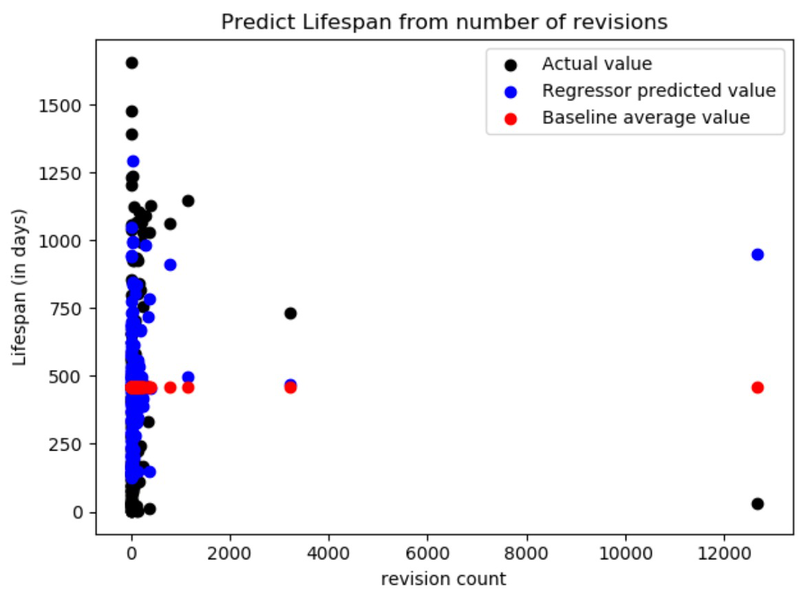
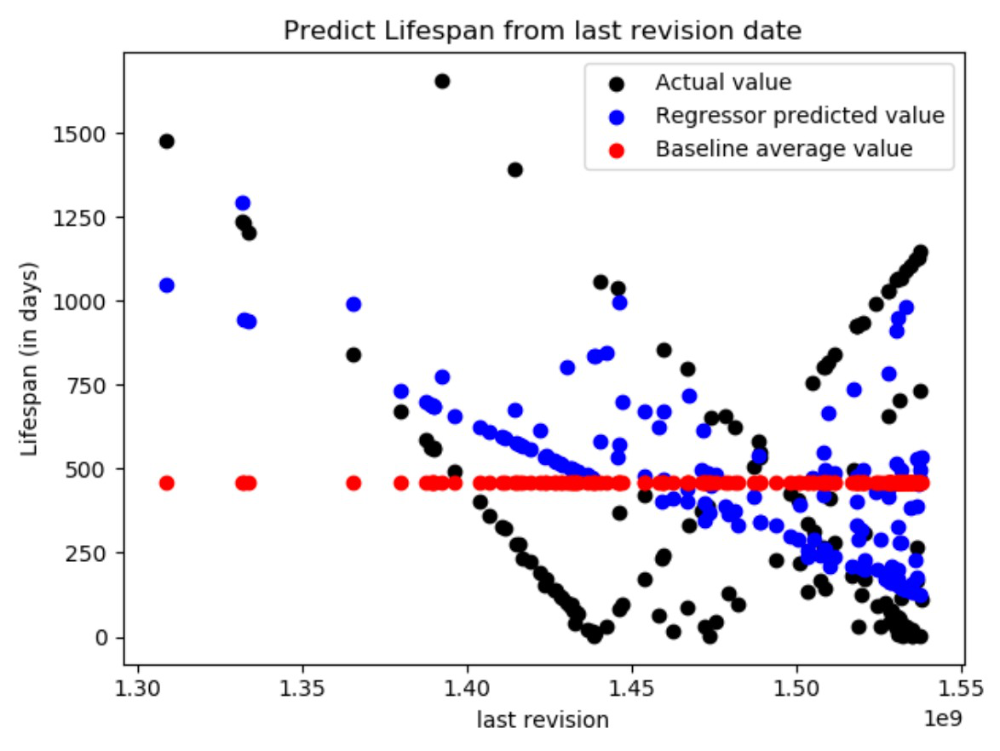
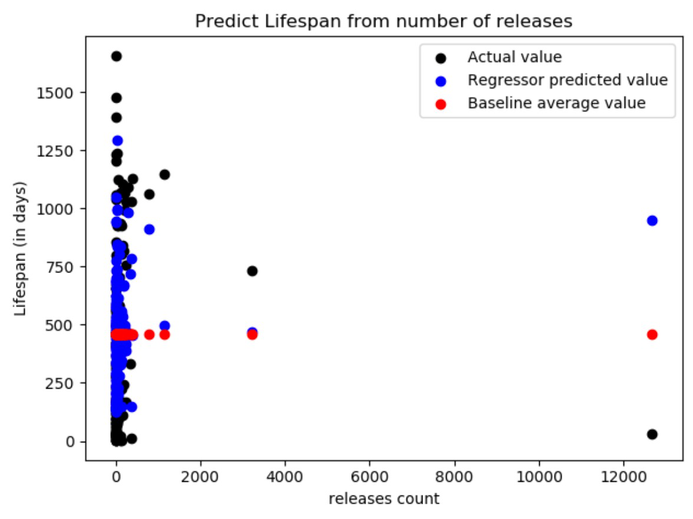

Results¶
Regression is a statistical method to determine the relationship of one variable dependent on others. For our project, We take the average lifespan of a repository as our baseline. Using this baseline, We have evaluated the model using the MAE metric. Our model has performed better than the baseline as shown below.
Error by Baseline : 348.8 (~349 days)
Error by Model : 288.7 days (~289 days)
We have plotted graphs comparing the lifespan to the various features such as total number of snapshot counts, number of targets, original date, number of revisions, number of releases and last revision date. Each diagram shows three scatter plots : The actual value obtained from the table, the value predicted by the model and the average lifespan value which is our baseline.
According to our graphs, We infer that the lifespan feature does not heavily depend on the values of the other features individually. Even though the number of snapshots are the same, the lifespan values differ showing that the snapshot count does not matter. However, A combination of these features will affect the lifespan value which means the combination of features does matter. This is proved by the fact that our model obtained a lower error rate than the baseline.
    {kind=link}
{kind=link}
{kind=link}
{kind=link}
{kind=link}
{kind=link}